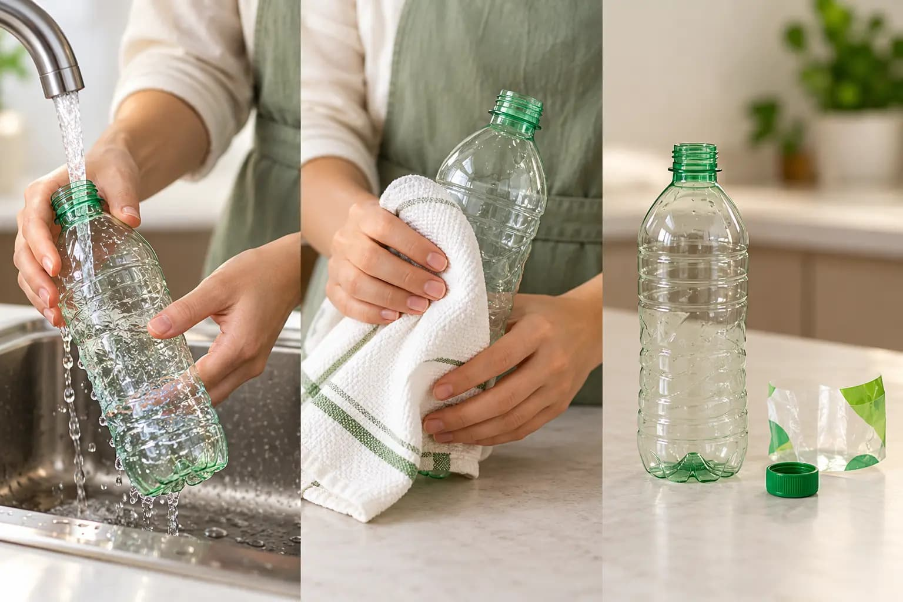

Bolsa o caja exclusiva
RecomendadoEspacio seco y ventilado
Destina una caja de cartón o bolsa reutilizable en la cocina o lavandería únicamente para plásticos y latas secas.


Cumple con todas las condiciones técnicas exigidas por el Ministerio del Ambiente y los recicladores de Lima para ingresar a la cadena de valor sin ser rechazada.
Aprende a acumular tus residuos aprovechables de forma limpia y ordenada antes del día de recolección.
Espacio seco y ventilado
Destina una caja de cartón o bolsa reutilizable en la cocina o lavandería únicamente para plásticos y latas secas.
10 a 15 botellas compactadas
Al aplanar las botellas puedes almacenar hasta 15 unidades en el mismo espacio que antes ocupaban 4 sin aplastar.
Tapas plásticas (PP #5)
Almacena las tapas en un frasco de vidrio o bidón para donarlas a campañas benéficas infantiles o centros de salud.